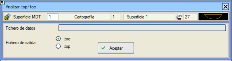

| |
|
.top/.toc DOSYASI İLE HARİTA ANALİZİ
|
Bu seçenek, bir nokta bulutunun (.top/.toc) herhangi bir yüzeye göre aritmetik analizini yapmamızı sağlar. Bir karşılaştırma yüzeyi ve bir referans .top veya .toc dosyasından yola çıkarak, [.top/.toc Analizi], koordinatları referans .top/.toc dosyasına karşılık gelen ve kotları dosyadaki noktalar ile verilen yüzey arasındaki kot farkı olan bir nokta bulutu oluşturur (bu, kalınlık haritaları için bir .top/.toc dosyasıdır). 
.toc veya .top dosyalarının analizi, mevcut SAM yüzeyi ile yapılacaktır; bu bir harita yüzeyi, bir SAM, bir SAM Grid'i veya Lazer Verisi olabilir. Ayrıca aşağıdaki bilgileri içeren bir DZTOP.res listesi oluşturulur:
|